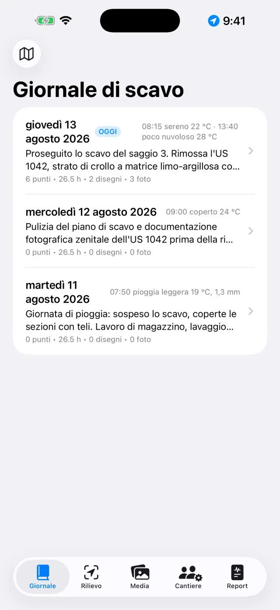
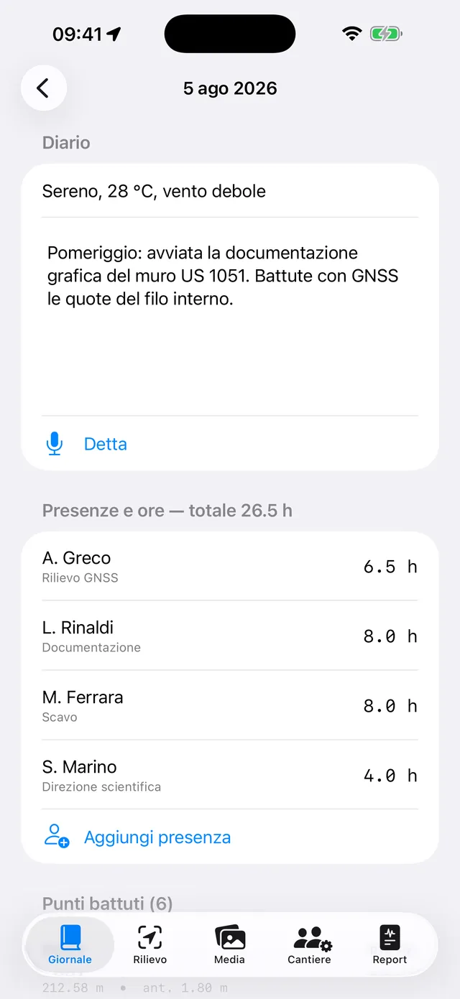
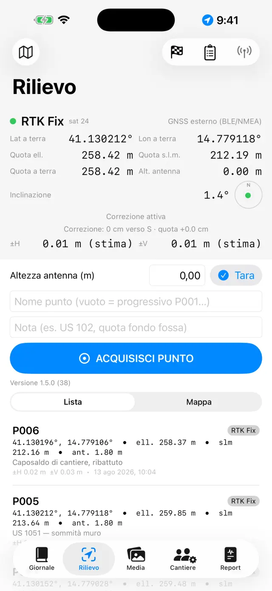
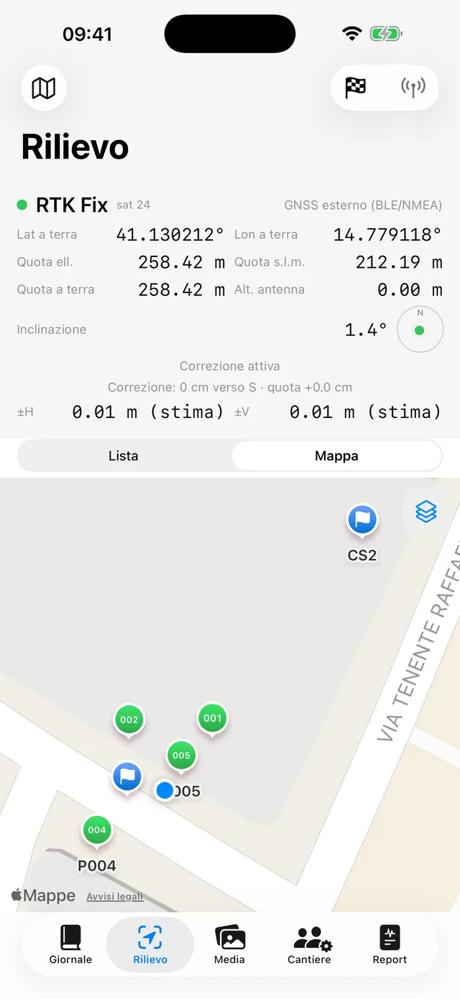
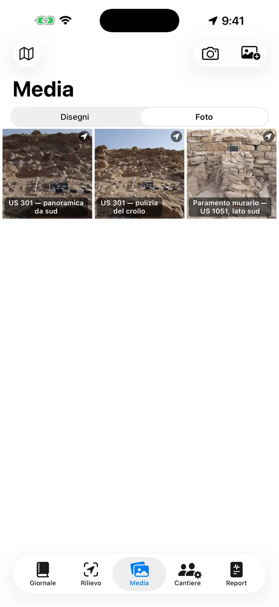
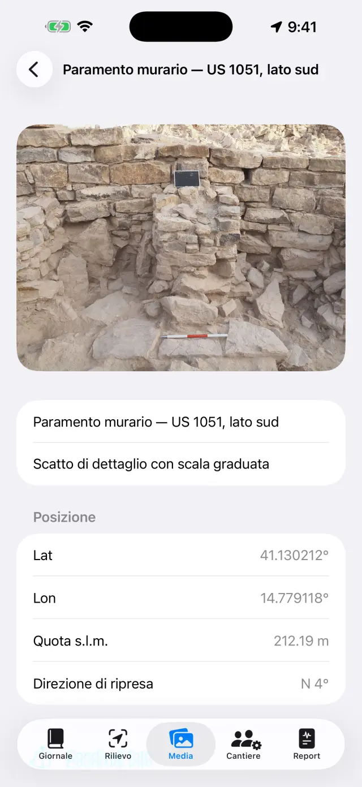
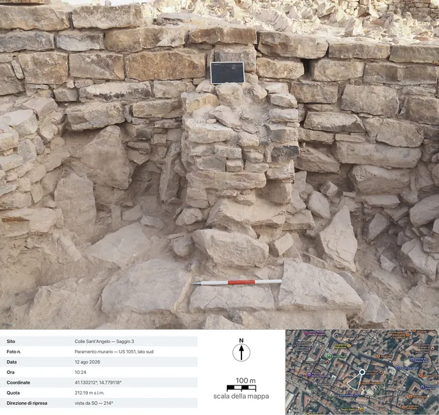
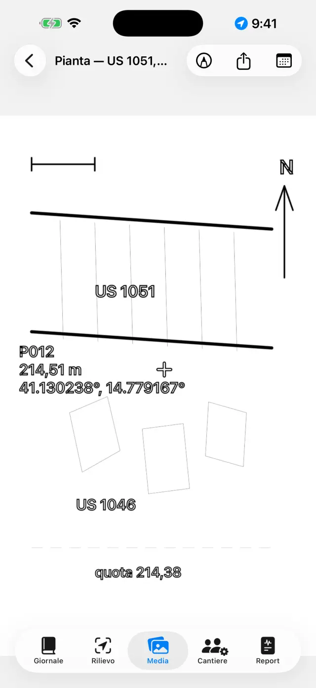
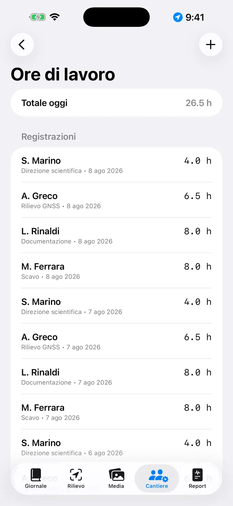
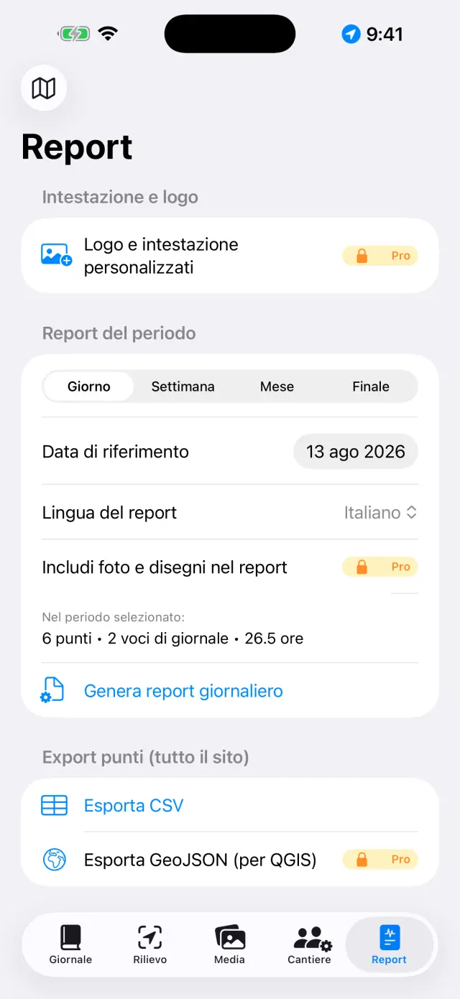

Il diario di scavo digitale per iPhone e iPad. 100% offline: i tuoi dati restano sul dispositivo.
In due parole
L'idea è una sola: ogni giornata di scavo è una pagina che si
compila da sola. Tu registri le cose dove capita — un punto GNSS nel Rilievo, una
foto nei Media, le ore nel Cantiere — e la pagina del giorno nel
Giornale le raccoglie tutte automaticamente. A fine settimana o a fine
scavo, i report si generano da soli a partire dalle pagine.
La giornata tipo
MattinaApri la pagina del giorno, annota meteo e diario (anche a voce con Detta)
PresenzeNel Cantiere registra chi c'è e le ore
RilievoAcquisisci i punti GNSS; verifica un caposaldo se usi l'RTK
FotoScatta dai Media: le coordinate si agganciano da sole
DisegniRicalca la sezione o la pianta su una foto («lucido»)
USAggiorna le schede delle US scavate e i loro rapporti: US
MaterialiCon le cassette davanti, registra quello che è uscito: Cantiere → Materiali
SeraDal tab Report genera il giornaliero: PDF pronto da inviare
Primi passi
Al primo avvio trovi già un sito di esempio. Per crearne uno tuo tocca il
nome del sito in alto (icona 🗺) → Nuovo sito… e dagli un
nome (es. «Colle Sant'Angelo — Saggio 3»).
Il nome del sito attivo è sempre visibile in alto: tutte le schede mostrano
i dati di quel sito. Per cambiare sito, tocca di nuovo il nome: l'elenco è
sotto il titolo «I tuoi siti», e con Rinomina sito… correggi un nome
senza perdere niente.
Concedi i permessi quando richiesti: posizione (per i punti),
fotocamera (per le foto), microfono (per la dettatura),
Bluetooth (solo se usi un ricevitore esterno).
Le sei schede
📓 Giornale
Tocca una giornata per aprire la sua pagina: diario, meteo, presenze, punti,
foto e disegni del giorno sono già lì.
Scrivi il diario o tocca Detta e parla: la trascrizione avviene
sul dispositivo, funziona anche senza rete.
Il meteo si scrive a mano (es. «Sereno, 28 °C, vento leggero») oppure si
rileva con Rileva, che chiede le condizioni del momento al servizio
meteorologico norvegese. Serve la rete e vale solo per la giornata di oggi: il
tempo di ieri non è più recuperabile. Un secondo tocco nel pomeriggio aggiunge
una misura. Quello che scrivi a mano vince sempre.
Rilevando, all'esterno va solo la posizione della zona arrotondata a circa
11 metri, e nei report la riga esce nella lingua del report.

L'elenco delle giornate

La pagina di una giornata
🧱 US — schede stratigrafiche
Una scheda per ogni unità stratigrafica, coi rapporti fra le US registrati come
collegamenti: è da qui che escono le schede US della documentazione e il
diagramma di Harris.
Nella scheda US tocca +: l'app propone il numero
successivo (lo puoi cambiare) e chiede tipo e definizione. Il numero è unico nel
sito; più tardi lo cambi con Cambia, e le cassette con quella
provenienza lo seguono.
La scheda raccoglie identificazione (tipo, definizione, area o settore,
quadrato), dimensioni e quote (lunghezza, larghezza, potenza, quota minima e
massima), descrizione (colore, consistenza, componenti), interpretazione,
datazione, date di apertura e chiusura e responsabile. Si salva da sola mentre
scrivi.
Accanto a definizione, colore, consistenza, componenti, interpretazione e
datazione c'è il pulsante del thesaurus (il libretto): scegli
dal lessico standard o dai tuoi termini, e la scheda resta uniforme fra chi
scava. Nei componenti se ne scelgono più d'uno. Se la parola che cerchi non c'è,
il foglio propone di aggiungerla. I tuoi termini valgono per tutti i siti e si
gestiscono da Thesaurus, nel menu ⋯ della scheda US.
Aggiungi rapporto: scegli il rapporto (copre, taglia, riempie, si
appoggia a, si lega a, uguale a, e i loro inversi) e scrivi il numero dell'altra
US. Il rapporto si registra una volta sola e compare girato nell'altra scheda: se
la 101 copre la 102, nella 102 leggi «coperta da 101». Se l'altra US non ha
ancora una scheda, viene creata vuota. Un rapporto che contraddice la sequenza
già registrata viene rifiutato, con la spiegazione.
La sezione dei materiali mostra le cassette la cui provenienza nomina la US
(«US 102», «USM 12»): non c'è niente da collegare a mano.
Aggiungi materiale apre la scheda del materiale con la provenienza
già scritta.
Dal menu ⋯, Diagramma di Harris disegna la sequenza dai rapporti:
la US più recente in alto, le US uguali o legate in un riquadro solo, i tagli
tratteggiati, le murarie su fondo grigio. Si ingrandisce con due dita e si
condivide come immagine.
📍 Rilievo
Il pannello in alto mostra la posizione live: coordinate, quote, precisione
e tipo di fix (GPS / RTK Float / RTK Fix).
Se usi un'asta, imposta l'Altezza antenna (m): la quota del punto
viene ridotta a terra automaticamente.
Tocca Acquisisci punto. Il nome è progressivo (P001, P002…), ma
puoi digitarne uno tuo (es. «US 102 — quota fondo») e aggiungere una nota.
Passa da Lista a Mappa per vedere i punti sul posto;
dalla mappa puoi attivare il catasto o un altro servizio WMS.
I capisaldi (🏁) vivono nella loro sezione: importali da CSV o creali, poi
apri la Verifica in tempo reale e controlla gli scarti ΔN/ΔE/ΔQ con
il puntale sul chiodo, prima di cominciare a rilevare.
Sotto Libretti c'è il libretto di campagna per il
livello ottico: stazioni, letture indietro e avanti, quote calcolate da un
caposaldo di partenza, con il controllo di chiusura. I punti livellati entrano
nel sito con la loro quota, come quelli GNSS.
Sui dispositivi con scanner LiDAR (iPhone Pro dal 12 in
su, iPad Pro) compare Misura 3D:
inquadra lentamente finché la superficie si ricostruisce, poi tocca i due punti
da misurare e leggi distanza, distanza orizzontale e dislivello. Con
Ancora a caposaldo scegli un caposaldo di quota nota e tocchi il suo
punto sul terreno: da lì in poi ogni misura porta anche la quota s.l.m. dei due
estremi. Fissa tiene la misura nella scena, Scarta misura la
butta, Riporta nel diario ne fa un testo che correggi prima di
confermare. È una misura ottica, e l'app lo dichiara scrivendo «LiDAR ±cm»:
serve per un dislivello o una lunghezza presa in fretta sul posto, e non
sostituisce il GNSS né il livello. Sui dispositivi senza scanner il pulsante
non c'è affatto.
Sotto il pannello ci sono le Registrazioni NMEA: il flusso grezzo
del ricevitore esterno finisce su file da sé — la
registrazione parte quando accendi l'antenna e si chiude quando la spegni, senza
che tu debba ricordartene. Serve per rileggere una giornata dubbia o per
consegnare il grezzo a chi post-processa. I file si condividono e si eliminano,
tranne quello della registrazione in corso; l'elenco si apre anche a ricevitore
spento, così i file di ieri restano raggiungibili.

Il pannello GNSS del Rilievo

Punti e capisaldi sulla mappa
Ogni punto salva entrambe le quote: ellissoidica
e ortometrica (s.l.m.). Col GPS interno del telefono la quota s.l.m. può non
essere disponibile: serve un ricevitore esterno (vedi sotto).
📷 Media
Scatta con il pulsante fotocamera o importa dal rullino.
Le foto prendono nome progressivo (F001, F002…) e vengono georeferenziate
con l'ultima posizione GNSS disponibile.
Allo scatto l'app registra anche la direzione di ripresa
dalla bussola: nel dettaglio della foto e nei report leggi «vista da SO — 214°»,
e per gli scatti a piombo (pianta, fondo di una US) la dicitura zenitale con la
direzione del bordo alto. Se la bussola è disturbata, l'app lo dice.
Tocca una foto per titolo e note (es. «US 102 da nord»).
Condividi scheda genera la
scheda fotografica di documentazione: la foto con sotto i dati
di scatto (sito, numero, data e ora, coordinate, quota, direzione), una vista
satellitare con il segnaposto e il cono di ripresa, la barra della scala della
mappa e la freccia del nord. La mappa richiede la rete: senza, la scheda esce
comunque, con il pannello dati allargato.
Scala virtuale posa sulla foto i riferimenti che sul campo non
avevi. Prima Calibra la foto: tocchi i due estremi di una distanza
che conosci — una tacca del righello, il lato di un mattone — e la dichiari in
centimetri. Poi metti quello che serve: Metrino 5 cm,
Metrino 10 cm o Metrino 20 cm, Palina 50 cm,
Palina 1 m o Palina 2 m, Quadrato 10×10 cm,
Crocetta di riferimento e Freccia del nord. Ogni elemento ha la sua resa
(Barra piatta, Asta reale, Righello a tacche), grandezza,
spessore e rotazione; per spostarne uno tienilo premuto e
trascinalo — così il pizzico per zoomare non lo sposta per sbaglio.
Aggiungi misura misura una distanza qualunque sulla foto con due
tocchi. Il numero non viene mai salvato: se ricalibri, tutte le etichette si
riscrivono da sole. Sulle foto scattate a piombo dall'app la freccia del nord
nasce già orientata sull'azimut registrato, e il report lo dichiara; se la ruoti
tu, la dicitura passa a «dichiarato». Condividi con scala esce una
copia della foto con sopra quello che hai posato — Condividi foto
resta l'originale nudo, col suo EXIF.
Elabora in serie (menu in alto nei
Media) prende un gruppo di foto dalla libreria e le passa tutte al
conta e misura, una dopo l'altra: ogni foto diventa una foto del sito con la
data dello scatto, e ognuna avrà la sua scheda materiale nuova
da confermare. Lo schermo resta acceso per tutta la serie. Se esci o la
interrompi, le foto già pronte restano in bozza e Riprendi la serie
riparte da dove era. Alla fine la revisione ti passa le schede una per una:
correggi provenienza, classe e quantità, e confermi.

La galleria delle foto

Il dettaglio di una foto: coordinate, quota e direzione di ripresa

La scheda esportata: i dati di scatto, la vista satellitare con il cono di ripresa, la scala della mappa e la freccia del nord
🧮 Conta e misura (nei Media)
Il vassoio di frammenti fotografato dall'alto, e l'app che li conta e li
misura da sola. Vive sulla foto di un materiale: la apri dalla
sua scheda e tocchi Conta e misura.
Prima la scala. L'app cerca da sé la stecca metrica nella
foto: se la trova ti dice quante caselle ha letto, tu dichiari quanto misura
una casella (1, 2, 5 o 10 cm) e tocchi Usa la proposta. Se non la
trova, tocchi a mano i due estremi di una distanza nota. Puoi anche scegliere
Non calibrare: allora si conta soltanto, e l'app scrive che le
misure non ci sono — non le inventa.
Il modello scontorna tutte le forme della foto: può volerci qualche decina
di secondi. Quello che compare è una proposta, non un
risultato: un tocco esclude una forma, un altro la riprende.
Unisci fonde in una sola le forme che sono lo stesso pezzo spezzato
in due; Limita a un'area ti fa disegnare col dito il recinto del
vassoio, e la ricerca resta lì dentro; Passata fine ripassa solo
dove non aveva trovato niente. I sospetti — le forme che
sembrano sfondo, il telo, l'ombra — si raggruppano e si escludono in un colpo
solo.
Con Materiale della forma tocchi un pezzo e dici cos'è;
Materiale per tutte lo dà a tutte insieme, o solo a quelle rimaste
senza. Proponi il materiale chiede al modello sul dispositivo di
indovinarlo: è una proposta da verificare, e la tua scelta vince sempre.
Avanti apre il foglio di conferma con il testo già scritto:
il conteggio, le misure (lato maggiore × lato minore, in ordine), e le
dichiarazioni oneste — «di cui N senza misura attendibile» quando una forma
non si lascia misurare. Se nella foto c'è un cartellino, l'app
prova a leggerlo e te lo dice sempre: o «Cartellino letto: …», o «Nessun testo
leggibile nella foto».
Gli interruttori compaiono solo dove c'è un posto vuoto da riempire:
Usa il conteggio come quantità, Usa come sigla,
Usa come provenienza. Quello che hai già scritto tu non viene mai
sovrascritto, e le note si allungano: un secondo giro si mette
in coda al primo, non al suo posto. Il testo è modificabile: nelle note entra
quello che leggi lì.
Dopo, nel dettaglio della foto, Numeri sulle forme mostra o
nasconde i numerini — e come li vedi lì escono anche nelle condivisioni e nei
report. Tocca una forma per sapere chi è: «7: 4,2×2,8 cm». Se la foto non
è calibrata l'etichetta lo dice, invece di dare un numero.
La misura vale nel piano dei due punti che hai
calibrato: la foto va scattata a piombo, col vassoio parallelo al sensore. Il
riferimento dichiarato è ±2 mm sui pezzi ben inquadrati; un frammento in
piedi o sul bordo della foto è fuori da quel patto.
✏️ Disegni (nei Media)
Crea una nuova tavola e scegli una foto del sito come sfondo: è il tuo
«lucido» digitale. Un disegno può proseguire su più giornate. Si può anche non
metterla, la foto: sul lucido bianco si disegna lo stesso.
Ricalca strati, tagli e pietre con il dito o con la Apple Pencil.
Pizzica per zoomare (fino a 6×, doppio tocco a due dita per
tornare a 1×). Se la foto ti copre il tratto, dal menu della fotocamera scegli
Opacità sfondo… e portala dove serve, dal 5% al 100%: sbiadisce la
foto, non il disegno. La scelta resta sulla tavola e vale anche in PDF, DOCX,
PNG e Esporta con legenda.
Tutto il resto sta sotto Strumenti (la chiave a forcella nella
barra), che è l'indice delle sette modalità: Casella di testo,
Ricalco, Scala della foto,
Punto quotato, Retino, Stile del tratto e
Scala virtuale. Se ne
tiene una sola alla volta: la spunta dice quale, e finché è
accesa il dito non disegna ma comanda quello strumento — per tornare a disegnare
tocca di nuovo la voce spuntata. Le tre voci che lavorano sull'immagine (ricalco,
scala, punto quotato) compaiono solo se una foto di sfondo c'è.
Con Casella di testo metti le etichette (es. «US 1002»): si
spostano, si ridimensionano col pizzico e hanno quattro caratteri tra cui
scegliere.
Il Ricalco riconosce il contorno
dell'oggetto che tocchi (una pietra, il limite di uno strato) e lo trasforma in
tratto: colore, spessore e stile della linea si cambiano senza uscire dalla
modalità, e i contorni escono lisci invece che a scaletta. Tutto avviene sul
dispositivo, senza rete.
Dentro il ricalco, Ricalca tutto fa
il giro da solo su tutta la foto. Nel foglio di avvio decidi la veste —
Solo contorni, oppure un retino e magari un Velo di colore
— e premi Avvia: la barra dice a che punto è, e ci vogliono alcune
decine di secondi. Quello che compare è un'anteprima, non il
disegno: un tocco dentro una forma la esclude, un altro la riprende (fra forme
sovrapposte vince la più piccola sotto il dito), Passata fine ripassa
soltanto dove non aveva trovato niente, e Applica mette sul disegno
quello che è rimasto. Finché non applichi, la tavola non è toccata.
Con lo strumento Scala della foto (righello) tocchi i due estremi
di una misura nota — un segmento della palina — e scrivi la distanza vera: la
foto acquisisce la scala, e da lì in poi le esportazioni parlano in metri.
Con Punto quotato metti sulla foto la crocetta di un punto GNSS
del sito (o un punto scritto a mano): nome, quota e coordinate compaiono in
un'etichetta trascinabile con la lineetta di richiamo. Pizzica sull'etichetta
selezionata per rimpicciolirla o ingrandirla, quando i valori coprono il
disegno.
Il Retino campisce le forme: tocchi dentro una
forma chiusa e quella si riempie. Ci sono i dieci retini di convenzione —
Muratura / pietra, Laterizi, Malta / intonaco,
Argilla, Limo, Sabbia, Ghiaia,
Carbone / cenere, Roccia naturale, Legno — e il
Velo di colore (un colore con la sua opacità), da soli o insieme. Se
una forma sta dentro un'altra vince la più piccola sotto il dito;
Rimuovi riempimento la ripulisce. Non serve la foto: la campitura
lavora sulle forme disegnate, quindi funziona anche sul lucido bianco.
Lo Stile del tratto veste una linea già disegnata:
la tocchi e scegli fra Continua, Tratteggiata,
Punteggiata e Tratto e punto, regolando lo spessore.
Disegna con questo stile fa nascere già vestiti i tratti successivi;
Rimuovi veste riporta la linea piena. Non è un effetto dello schermo:
i trattini sono segmenti veri, e restano tali in PDF, DOCX, PNG, SVG e DXF.
La Scala virtuale porta sulla tavola gli stessi riferimenti
delle foto: metrino, palina, quadrato, crocetta, freccia del nord e misure a
due tocchi. I tipi metrici chiedono che la tavola abbia una scala, cioè la
Scala della foto: senza una distanza nota l'app spiega invece di
disegnare. In SVG e DXF questi elementi escono
come vettori, sul loro layer, e la misura letta col righello
del GIS combacia con l'etichetta.
Esporta con legenda: l'immagine
esce con una fascia bianca sotto — barra metrica (se la scala c'è), freccia
del nord per le foto scattate a piombo, «vista da» per le frontali.
Esporta vettoriale: SVG per il
disegno, oppure DXF per il GIS. Con almeno due punti quotati
con coordinate su una foto a piombo, il DXF esce georeferenziato in
UTM e in QGIS si posiziona da solo sul mondo; con la sola scala esce
in metri locali; senza né l'una né gli altri l'app lo dice e non produce un
file senza unità. L'SVG fa eccezione sull'opacità: incorpora la foto originale
tale e quale, quindi lo sfondo attenuato lì esce a piena forza.
Quando hai finito, nascondi la foto: resta il disegno pulito, pronto per il
report.

Il lucido digitale
👷 Cantiere
Registra le presenze del giorno: nome, mansione e ore di ciascuno.
Tieni l'inventario delle attrezzature e a chi sono assegnate.
Sotto Materiali c'è il registro di quello che esce dallo scavo,
col numero delle righe già registrate scritto sotto il nome.

Presenze e ore
📦 Materiali (nel Cantiere)
Il momento vero non è la fotocamera: è sedersi a fine giornata con le
cassette davanti e batterle una dopo l'altra, stanchi e con le mani sporche.
Tutto qui è fatto per quel momento.
Cantiere → Materiali → +. La scheda si apre
già con la data di oggi e con l'ultima provenienza usata: dalla
seconda riga in poi registrare è quasi solo toccare. Il campo propone le
provenienze già usate su quel sito.
I campi sono nell'ordine in cui si compila davvero: Provenienza
(es. «US 102»), Classe, Quantità con la sua
Unità (frammenti, pezzi, sacchetti, cassette, grammi),
la sigla della cassetta o del sacchetto, Stato
(Da lavare, Lavato, Siglato,
Consegnato), note e data.
Le classi proposte sono undici — Ceramica, Laterizi,
Ossa animali, Ossa umane, Metallo,
Vetro, Industria litica, Malta e intonaco,
Legno, Campioni, Altro — ma puoi scriverne una
tua («Intonaco dipinto»): resterà quella parola in ogni lingua, perché l'app
traduce solo le voci che propone lei.
La quantità si può lasciare vuota: una riga può dire «c'era questa roba»
senza contarla, e nelle esportazioni quella cella resta vuota, mai zero.
Le foto della scheda si fanno con Scatta, si prendono con
Dalla libreria oppure con Dal sito, che pesca fra le foto
già in galleria che non hanno ancora una scheda. Sono le stesse foto dei
Media: cancellare un materiale non cancella le sue
foto, che perdono solo il legame.
Nella pagina della giornata la sezione Materiali compare solo se
quel giorno ne hai registrati. Riporta nel diario propone la riga
riassuntiva, raggruppata per provenienza e con le note per intero: la correggi
e la aggiungi in coda al diario. Premuto due volte scrive due volte — il diario
non si riscrive mai da solo.
📄 Report
Scegli il tipo: giornaliero,
settimanale, mensile o finale
con appendici complete.
Scegli la lingua del report fra diciassette,
indipendente dalla lingua dell'app: la relazione può uscire in tedesco anche se
l'app la usi in italiano.
Genera il PDF, oppure esporta DOCX con logo e foto,
CSV dei punti, GeoJSON per QGIS.
In fondo c'è Export materiali (tutto il sito):
Esporta CSV materiali per il foglio di calcolo, e
Esporta HTML materiali per una tabella con le miniature che si apre
in qualunque browser senza rete. Intestazioni, classi, unità e stati escono
nella lingua scelta per il report; quello che hai scritto tu resta come l'hai
scritto. Nel report di fine lavoro i materiali hanno la loro appendice, per
provenienza.
Le US entrano nei report: quelle aperte e chiuse nel periodo nel giornaliero,
nel settimanale e nel mensile; nel report finale c'è l'appendice con tutte le
schede e il diagramma di Harris.
Con le foto nei report attive puoi scegliere Schede fotografiche al posto delle foto: ogni foto entra nel PDF e
nel DOCX come scheda di documentazione completa di dati e mappa, nella lingua
del report.

Generazione dei report
Ricevitore GNSS esterno e NTRIP
Con un ricevitore esterno (antenna centimetrica) l'app arriva alla precisione
RTK. Il GPS interno resta sempre disponibile come ripiego.
Accendi il ricevitore e attiva il Bluetooth del telefono.
Nel Rilievo scegli la sorgente di posizione: GNSS esterno
(BLE/NMEA) e seleziona il tuo ricevitore
dall'elenco. Sono supportati anche i ricevitori MFi e quelli che
pubblicano NMEA in rete.
Per le correzioni RTK configura l'NTRIP: indirizzo del
caster, porta, mountpoint, utente e password (restano nel portachiavi del
dispositivo). L'app invia la posizione al caster e riceve le correzioni.
Attendi il passaggio a RTK Fix: precisione centimetrica.
Verifica su un caposaldo prima di iniziare.
Dove il telefono non prende, esiste anche la strada
senza internet: una base piantata su punto noto e un rover che
si scambiano le correzioni via radio LoRa, senza caster e senza
SIM (kit RTK DFRobot con ponte ESP32). All'app non cambia niente — riceve dal
ricevitore un NMEA già corretto — e il montaggio del ponte è documentato a parte,
nel suo README: questa resta una guida all'app, non un manuale di firmware.
Backup e scambio
Dal menu del sito tocca Esporta sito (.zip): dentro c'è tutto —
giornale, punti, foto, disegni, ore, capisaldi, materiali e schede US.
Conserva lo ZIP dove vuoi (Files, Drive, e-mail…). È il tuo backup: l'app
non ha cloud, per scelta.
Importa sito (.zip)… ricrea il sito su un altro dispositivo,
anche tra iPhone e Android. L'importazione non sovrascrive mai e non unisce:
crea sempre un sito nuovo accanto ai tuoi, con «(importato)» nel nome se ne hai
già uno uguale.
⚠️ Elimina sito… cancella il sito con tutto il suo
contenuto ed è irreversibile: esporta prima uno ZIP se hai dubbi.
Gratuita
Giornale di Scavo è gratuita e completa: tutte le funzioni
descritte in questa guida sono incluse, senza abbonamenti, senza acquisti nell'app
e senza filigrana, con siti illimitati.
Risoluzione dei problemi
Il ricevitore Bluetooth non compare o non si collega
Controlla nell'ordine:
il ricevitore è acceso e non è già collegato a un'altra app o telefono;
il Bluetooth di sistema è attivo e l'app ha il permesso Bluetooth
(Impostazioni → Giornale di Scavo);
la sorgente scelta nel Rilievo è GNSS esterno (BLE/NMEA);
spegni e riaccendi il ricevitore, poi riprova la ricerca.
Non arrivo mai a RTK Fix
Serve una connessione NTRIP attiva: controlla caster, mountpoint e credenziali.
Controlla la copertura dati del telefono: le correzioni viaggiano su internet.
Cielo aperto: alberi fitti e pareti vicine degradano il segnale. Con
copertura scarsa puoi restare in RTK Float (decimetrico).
Scegli un mountpoint vicino (< 30–40 km) o una rete VRS.
NTRIP non si connette
Verifica indirizzo e porta (spesso 2101) e che il mountpoint esista:
molti caster pubblicano l'elenco (sourcetable).
Utente o password errati danno errore 401/403: ricontrolla le credenziali.
Alcune reti richiedono l'invio della posizione (GGA): l'app lo fa da sola,
ma serve che il ricevitore abbia già un fix.
La quota s.l.m. è vuota o zero
Il GPS interno dei telefoni fornisce solo la quota ellissoidica. La quota
ortometrica (s.l.m.) arriva dalla frase GGA di un ricevitore esterno. Senza
ricevitore, i punti salvano comunque l'ellissoidica.
La dettatura non funziona
Controlla il permesso microfono e riconoscimento vocale in Impostazioni.
La trascrizione è on-device: la prima volta il sistema può dover scaricare
il modello della lingua (serve rete una tantum, poi funziona offline).
Parla a frasi brevi; il testo si inserisce in fondo al diario.
La mappa catastale (WMS) non si vede
L'app è offline, ma i layer WMS sono servizi web: servono una connessione e
un servizio attivo. Il catasto italiano è preconfigurato; per altri paesi
inserisci l'endpoint WMS del servizio nazionale (deve supportare EPSG:3857).
Lontano dalla copertura dati, la mappa base e i punti restano visibili.
Le foto non hanno coordinate
La foto prende la posizione dall'ultimo fix GNSS: apri prima il Rilievo e
aspetta che la posizione sia agganciata, poi scatta. Col permesso posizione
negato, le foto si salvano senza coordinate.
Nel report mancano foto o logo
Controlla che sia attivo Includi foto e disegni nel report e che
il logo sia scelto in Intestazione e logo: valgono sia per il PDF sia
per il DOCX.
Ho eliminato un sito per errore
L'eliminazione è definitiva: i dati non sono recuperabili (non esiste un
cloud). Se hai uno ZIP esportato in precedenza, importalo per ripristinare il
sito a quella data. Consiglio: esporta uno ZIP a fine giornata.
«Rileva» è spento, o dice «Meteo non disponibile»
se il pulsante è spento sei sulla pagina di un giorno passato: il meteo si
rileva solo nella giornata di oggi;
se compare «Meteo non disponibile» manca la rete, oppure il sito non ha
ancora un punto GNSS da cui prendere la posizione — batti un punto e riprova.
La scheda fotografica esce senza mappa
La vista satellitare arriva da Apple e richiede la rete: l'app aspetta fino
a 15 secondi, poi genera la scheda senza mappa (i dati non aspettano la rete).
Su reti lente da cantiere può volerci l'intera attesa: riprova sotto Wi-Fi.
Senza geotag sulla foto, la mappa non c'è per definizione.
«Ricalca tutto» non trova niente, o trova troppo
il giro lavora sulla foto di sfondo: senza foto il comando non c'è, e finché
si legge «Preparazione della foto…» il modello non è ancora pronto — aspetta;
se le forme sono poche, premi Passata fine: ripassa con una griglia
più fitta solo dove il primo giro non aveva visto niente, e aggiunge quello che
trova senza rimettere dentro ciò che avevi escluso;
se sono troppe, non applicare tutto: nell'anteprima tocca le forme di troppo
per escluderle una a una, poi Applica. Quello che escludi non finisce
sul disegno;
le foto piatte — poco contrasto, luce a mezzogiorno, terreno tutto dello
stesso colore — danno pochi contorni per forza di cose: lì conviene il ricalco a
tocco singolo, che sa dove stai guardando;
se resta pieno di forme minuscole, riprova con Solo contorni: si
leggono meglio, e il retino si può sempre stendere dopo, a mano.
Il tratto non si lascia rivestire
il tocco cerca la linea più vicina entro un raggio di un polpastrello: se il
tratto è sottile o affollato, zooma e tocca più preciso, proprio
sopra l'inchiostro;
si vestono solo i tratti. Campiture, caselle di testo e
crocette dei punti quotati non sono linee, e sotto il dito non rispondono;
se compare «Questo tratto non si può rivestire», fra le linee che il tocco ha
raccolto ce n'è una che linea non è: il puntino lasciato da un tocco fermo, o un
tratto arrivato guasto da un archivio importato. Cancella il puntino e riprova,
oppure tocca la linea in un punto lontano da lui. Un puntino da solo non si veste
e basta: non c'è verso di fare un tratteggio con un punto;
se fra il tocco e Applica hai annullato o disegnato qualcos'altro,
la selezione si scioglie da sé per non vestire il tratto sbagliato: tocca di
nuovo la linea e riprova.
Il retino non compare quando tocco dentro la forma
la forma dev'essere chiusa, e chiusa da un solo
tratto: parti e torna quasi allo stesso punto senza staccare il dito
(qualche millimetro di scarto è tollerato). Due linee che si toccano agli estremi
restano due linee aperte, e riempire una tavola oltre un bordo che nessuno ha
disegnato sarebbe peggio che non riempirla;
i contorni prodotti dal Ricalco sono chiusi per costruzione: quelli
si campiscono sempre;
se le forme sono una dentro l'altra, il tocco prende la più
piccola che lo contiene — per campire quella grande, tocca in un punto
che stia fuori dalle piccole;
hai toccato dentro la forma, non sul suo bordo? Il bersaglio è l'area, non la
linea.
Il DXF viene rifiutato, o si apre «vicino all'origine» nel GIS
per il DXF georeferenziato servono una foto scattata a
piombo con la fotocamera dell'app e almeno due punti quotati con
coordinate ben distanziati sulla foto;
con la sola scala della palina il DXF esce in metri locali:
è corretto, ma il GIS lo mostra vicino all'origine — l'app te lo dice prima;
senza scala né punti l'esportazione si rifiuta: un DXF senza unità non
sarebbe leggibile sensatamente da nessun GIS.
Ho attenuato lo sfondo, ma l'SVG esce con la foto piena
È così e resta così: l'SVG si porta dentro il file originale
della foto, non una sua copia sbiadita, e schiarirlo vorrebbe dire
ricomprimerla — cioè peggiorarla per tutti quelli che l'SVG lo aprono per
lavorarci. Opacità sfondo… vale nell'editor, nel PDF, nel DOCX, nel
PNG e in Esporta con legenda. Se ti serve il vettoriale senza foto,
scegli SVG — solo il disegno; se ti serve la foto attenuata, esporta
in PNG o passa dal report.
La freccia del nord non compare nell'esportazione con legenda
La freccia compare solo per le foto scattate a piombo con la
fotocamera dell'app, che registra l'azimut nello scatto. Per le foto
frontali esce la scritta «vista da …» (una freccia del nord sul piano di un
prospetto sarebbe una bugia geometrica); per le foto importate dal rullino non
c'è nessuna delle due, perché mancano i dati di ripresa.
«Conta e misura» non compare sulla foto
Il comando vive solo sulle foto di un materiale — è lì che
ha senso scontornare frammenti — e si apre dal dettaglio della foto, non dalla
scheda, che mostra soltanto le miniature.
La stecca metrica non viene trovata
si riconoscono le stecche a caselle — bianco/nere,
giallo/nere, rosso/bianche — e i righelli a blocchi; le schede colori e i
righelli lisci, senza caselle, non si riconoscono per principio;
la stecca deve occupare almeno un decimo del lato lungo della foto ed
essere tutta dentro l'inquadratura: tagliata dal bordo, non si legge;
quante caselle ha letto lo dice l'app, ma quanto misura una
casella lo dici tu: dall'immagine non si deduce, e indovinarlo
vorrebbe dire mentire sulla scala;
se non la trova, tocchi a mano i due estremi di una distanza nota. Con
Non calibrare si conta soltanto, e l'app dichiara che le misure non
ci sono.
Il conteggio non torna col vassoio vero
quello che vedi dopo il giro è una proposta: escludi col tocco il righello,
il cartellino, le ombre nette e tutto ciò che non è un reperto, finché il numero
combacia con quello che hai contato a mano;
se un frammento è stato letto come due pezzi, tocca le due forme e
Unisci: diventa una forma sola, con un numero solo;
se il giro guarda anche fuori dal vassoio, disegna il recinto con
Limita a un'area: la ricerca resta lì dentro;
se mancano pezzi, Passata fine ripassa solo dove non aveva
trovato niente, senza rimettere dentro quello che avevi escluso;
il numero che finisce nelle note è quello che hai confermato
tu, non quello che il modello aveva proposto.
Il cartellino non viene letto, o propone la cosa sbagliata
l'esito è sempre dichiarato: o «Cartellino letto: …», o «Nessun testo
leggibile nella foto» — il silenzio non c'è;
la lettura automatica sbaglia, soprattutto sulla scrittura a mano: per
questo il testo del foglio si corregge prima di confermare;
Usa come sigla e Usa come provenienza compaiono solo
se quei campi sono vuoti: quello che hai già scritto tu non si tocca;
due cartellini diversi nella stessa foto rendono il dato ambiguo, e allora
l'app non propone niente: il testo letto lo vedi lo stesso, la scelta resta a
te.
La serie si è fermata, o alcune foto non sono entrate
le foto della libreria che stanno su iCloud e non sono ancora scaricate non
si caricano: aprile una volta nell'app Foto, poi Riprova gli errori;
se sei uscito dall'app o l'hai interrotta, le foto già pronte restano in
bozza e Riprendi la serie riparte da dove era, senza rifare quello
che era fatto;
le foto importate prendono la data dello scatto, non quella
di oggi: se non le vedi, sei sul giorno sbagliato — passa a Tutte
oppure vai al loro giorno.
Il metrino virtuale non combacia col righello vero
La scala vale nel piano dei due punti che hai calibrato: se
la foto è presa di sbieco, un elemento posato più lontano o più vicino di quel
piano non può combaciare. Fotografa a piombo, col piano parallelo al sensore, e
calibra su una distanza che sta in quel piano. Se il valore dichiarato era
sbagliato, Ricalibra: tutte le misure già posate si riscrivono da
sole, perché il numero non è mai salvato.
«Misura 3D» non c'è, o la misura sfora
serve lo scanner LiDAR: sugli iPhone e iPad che non ce
l'hanno il pulsante non esiste affatto, invece di stare lì spento senza
spiegazione;
se compare «Superficie ancora incompleta», la ricostruzione non è finita:
muoviti lentamente e inquadra da più angoli prima di toccare i punti;
sole pieno e superfici lucide — marmo, piastrelle, intonaco verniciato —
degradano la lettura: resta una misura ottica, dichiarata «LiDAR ±cm»;
se la sessione si interrompe (una telefonata, l'app messa da parte) un
eventuale ancoraggio a caposaldo decade e l'app lo dice: meglio
rifarlo che tenersi quote non più vere.